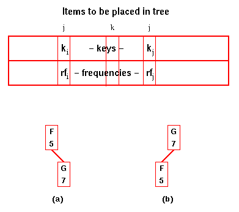
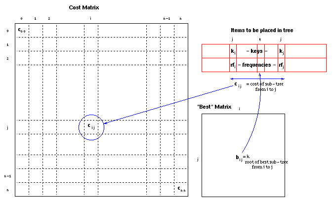
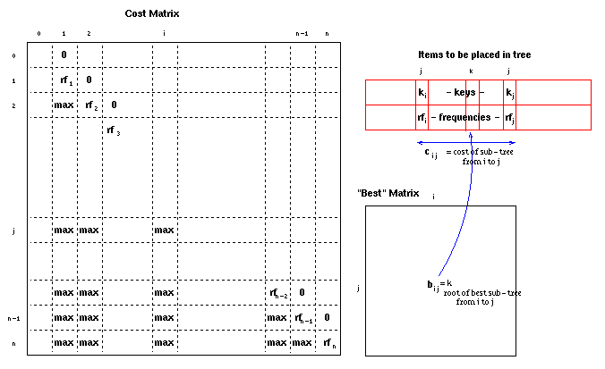

| Data Structures and Algorithms |
| 9.3 Optimal Binary Search Trees |
Up to this point, we have assumed that an optimal search tree is one in which the probability of occurrence of all keys is equal (or is unknown, in which case we assume it to be equal). Thus we concentrated on balancing the tree so as to make the cost of finding any key at most log n.
However, consider a dictionary of words used by a spelling checker for English language documents. It will be searched many more times for 'a', 'the', 'and', etc than for the thousands of uncommon words which are in the dictionary just in case someone happens to use one of them. Such a dictionary needs to be large: the average educated person has a vocabulary of 30 000 words, so it needs ~100 000 words in it to be effective. It is also reasonably easy to produce a table of the frequency of occurrence of words: words are simply counted in any suitable collection of documents considered to be representative of those for which the spelling checker will be used. A balanced binary tree is likely to end up with a word such as 'miasma' at its root, guaranteeing that in 99.99+% of searches, at least one comparison is wasted!
If key, k, has relative frequency, rk, then in an optimal tree,
We make use of the property:
Thus the problem is to determine which key should be placed at the root of the tree. Then the process can be repeated for the left- and right-sub-trees. However, a divide-and-conquer approach would choose each key as a candidate root and repeat the process for each sub-tree. Since there are n choices for the root and 2O(n) choices for roots of the two sub-trees, this leads to an O(nn) algorithm.Lemma
Sub-trees of optimal trees are themselves optimal trees.Proof
If a sub-tree of a search tree is not an optimal tree, then a better search tree will be produced if the sub-tree is replaced by an optimal tree.
An efficient algorithm can be generated by the dynamic approach. We calculate the O(n) best trees consisting of just two elements (the neighbours in the sorted list of keys).
|  | In the figure, there are two possible
arrangements for the tree containing F
and G. The cost for (a) is Thus (b) is the optimum tree and its cost is saved as c(f,g). We also store g as the root of the best f-g sub-tree in best(f,g). Similarly, we calculate the best cost for all n-1 sub-trees with two elements, c(g,h), c(h,i), etc. |
There are O(n2) such sub-tree costs. Each one requires n operations to determine, if the cost of the smaller sub-trees is known.
Thus the overall algorithm is O(n3).
Code for optimal binary
search tree
Note some C 'tricks' to handle dynamically-allocated two-dimensional
arrays using pre-processor macros for C and BEST!
This Java code
may be easier to comprehend for some!
It uses this class for
integer matrices.
The data structures used may be represented:

After the initialisation steps, the data structures used
contain the frequencies, rfi,
in cii (the costs of single element trees),
max everywhere below the diagonal and zeroes in
the positions just above the diagonal (to allow for the
trees which don't have a left or right branch):

In the first iteration, all the positions below the diagonal (ci,i+1) will be filled in with the optimal costs of two-element trees from i to i+1.
In subsequent iterations, the optimal costs of k-1 element trees (ci,i+k) are filled in using previously calculated costs of smaller trees.
|
Optimal Binary Search Tree Animation This animation was written by John Morris and (mostly) Woi Ang |
|
Please email comments to: morris@ee.uwa.edu.au |
| Continue on to Matrix Chain Multiplication | Back to the Table of Contents |